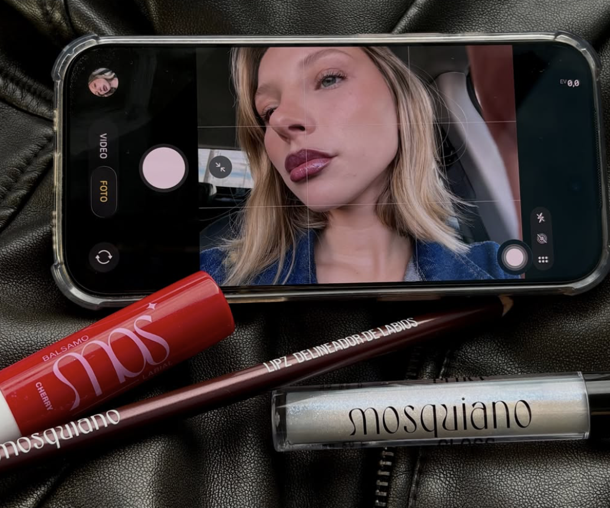

Auditoría de marca
Auditoría y propuesta de marca — MOSQUIANO
Una marca que crece rápido apoyada en una sola cara. Qué encontré al auditarla y qué propuse para que la marca se sostenga sola.

Contexto
Para realizar este ensayo, elegí Mosquiano, una marca argentina de cosmética creada por la influencer Sele Mosca, conocida por su fuerte conexión con una comunidad joven en redes sociales. Me interesó por ser un caso real de una marca que crece muy rápido apoyada casi por completo en la imagen de su fundadora, algo cada vez más común entre marcas nacidas en redes.
Metodología
Hice un análisis exhaustivo combinando varias herramientas de marketing estratégico, analizando a su vez a la competencia de la marca:
Herramientas
Competencia analizada
Problema encontrado
80%
La marca depende en un 80% del alcance y la credibilidad de una sola persona, Sele Mosca. Es una fortaleza a corto plazo, pero un riesgo estructural, si su reputación se ve afectada, la marca cae con ella. Confirmamos este riesgo con las herramientas empleadas.
Propuesta
Con eso armé una propuesta de estrategia de comunicación para construir marca de comunidad, no solo marca de una persona: un mensaje central ("Animate a destacar"), sumar múltiples creadoras que generen contenido (UGC) en lugar de depender de una sola cara. Definí objetivos concretos junto con un índice propio para medir la autonomía de la marca respecto de su fundadora.
20%
más clientes nuevos en 12 meses, con el lanzamiento de dos productos nuevos
65%
del público asociando la marca con "animarte a destacar" (no solo con Sele Mosca) en 3 meses